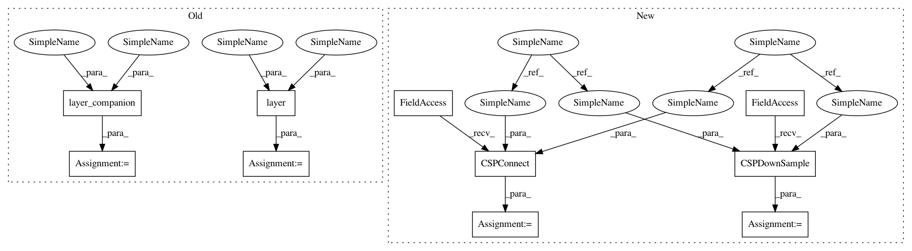

8ee48095b1e4918478720c688e7703764bffd457,official/vision/beta/projects/yolo/modeling/building_blocks/csp_connect_test.py,CSPConnect,test_gradient_pass_though,#CSPConnect#Any#Any#Any#Any#,29
Before Change
def test_gradient_pass_though(self, filters, width, height, mod):
loss = ks.losses.MeanSquaredError()
optimizer = ks.optimizers.SGD()
test_layer = layer(filters, filter_reduce=mod)
path_layer = layer_companion(filters, filter_reduce=mod)
init = tf.random_normal_initializer()
x = tf.Variable(
initial_value=init(shape=(1, width, height, filters), dtype=tf.float32))
After Change
def test_gradient_pass_though(self, filters, width, height, mod):
loss = ks.losses.MeanSquaredError()
optimizer = ks.optimizers.SGD()
test_layer = nn_blocks.CSPDownSample(filters, filter_reduce=mod)
path_layer = nn_blocks.CSPConnect(filters, filter_reduce=mod)
init = tf.random_normal_initializer()
x = tf.Variable(
initial_value=init(shape=(1, width, height, filters), dtype=tf.float32))
y = tf.Variable(initial_value=init(shape=(1, int(np.ceil(width // 2)),
int(np.ceil(height // 2)),
filters),
In pattern: SUPERPATTERN
Frequency: 3
Non-data size: 10
Instances
Project Name: tensorflow/models
Commit Name: 8ee48095b1e4918478720c688e7703764bffd457
Time: 2020-10-27
Author: banna3vishnu@gmail.com
File Name: official/vision/beta/projects/yolo/modeling/building_blocks/csp_connect_test.py
Class Name: CSPConnect
Method Name: test_gradient_pass_though
Project Name: tensorflow/models
Commit Name: 8ee48095b1e4918478720c688e7703764bffd457
Time: 2020-10-27
Author: banna3vishnu@gmail.com
File Name: official/vision/beta/projects/yolo/modeling/building_blocks/csp_connect_test.py
Class Name: CSPConnect
Method Name: test_gradient_pass_though
Project Name: tensorflow/models
Commit Name: 8ee48095b1e4918478720c688e7703764bffd457
Time: 2020-10-27
Author: banna3vishnu@gmail.com
File Name: official/vision/beta/projects/yolo/modeling/building_blocks/csp_downsample_test.py
Class Name: CSPDownSample
Method Name: test_gradient_pass_though
Project Name: tensorflow/models
Commit Name: 8ee48095b1e4918478720c688e7703764bffd457
Time: 2020-10-27
Author: banna3vishnu@gmail.com
File Name: official/vision/beta/projects/yolo/modeling/building_blocks/csp_connect_test.py
Class Name: CSPConnect
Method Name: test_pass_through